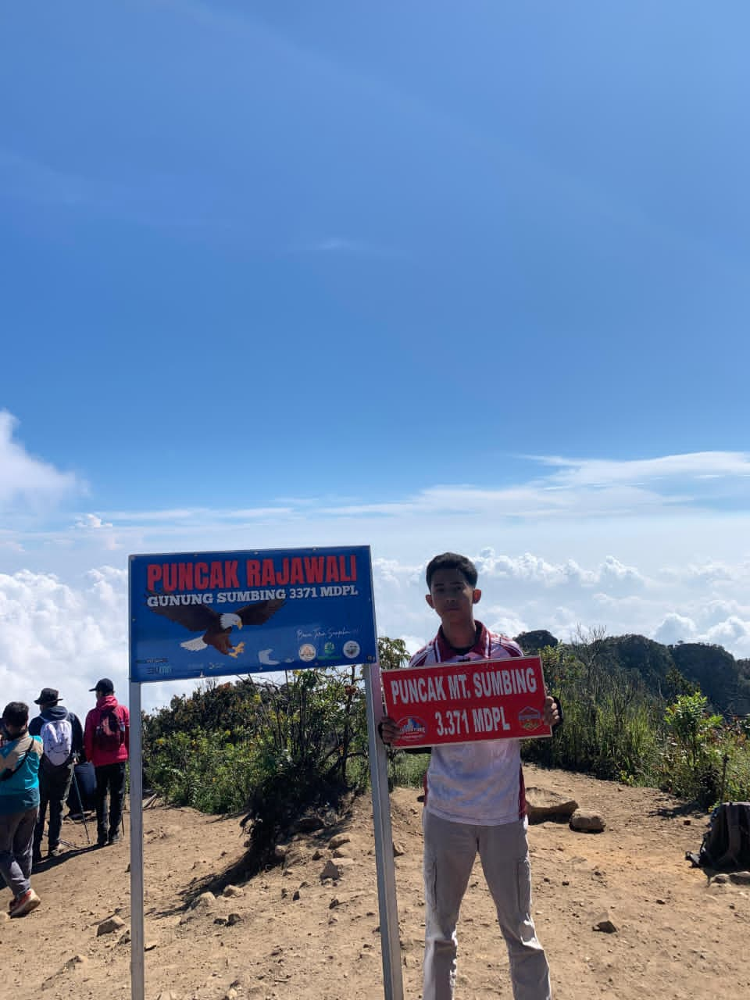
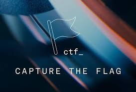
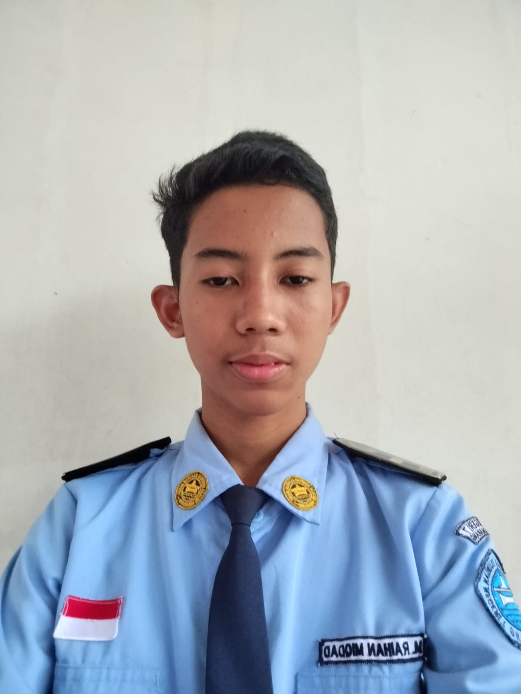

Family Background
I am the second of two siblings, growing up in a simple, mutually supportive family environment.
Open to internships & collaboration
Network Enthusiast Cyber Security SIJA Student
An 11th-grade student majoring in Networking Information Systems and Applications (SIJA) from Semarang. I am passionate about networking, the fundamentals of cyber security, and using AI to boost learning productivity. I built this portfolio to showcase my potential, consistency, and readiness to grow in the IT world.
“Keep learning, keep trying, and never stop growing.”

01 — About
A quick snapshot of my background, interests, and the goals that drive me forward every day.
I am the second of two siblings, growing up in a simple, mutually supportive family environment.
SMK Negeri 7 Semarang, majoring in Networking Information Systems and Applications, currently in 11th grade.
Mountain hiking, football, badminton, and other physical activities that keep me active.
Networking, cyber security fundamentals, exploring new technology, and making the most of AI.
To keep studying information technology and grow into a professional specializing in networking and cyber security.
Diligent, serious, persistent, a fast learner, strong problem solving, teamwork, and high curiosity.
02 — Skills
The technologies and soft skills I use to learn, build, and solve problems.
03 — Work
A collection of projects that reflect my learning journey in networking, IoT, and cyber security.
 IoT
IoT
An IoT smart home project for monitoring and controlling home devices automatically and remotely — built as a team effort from concept to documentation.
View projectA set of assignments and hands-on network configuration practice covering routing, IP addressing, NAT, DHCP, and troubleshooting using MikroTik.
View report
SecuritySeveral writeups I have authored — material summaries, hands-on practice, and lessons learned — all collected in one archive.
View certificates & writeups04 — Resume

Muhammad Raihan Miqdad
Cyber Security Enthusiast
A student at SMK Negeri 7 Semarang majoring in SIJA, focusing on networking and cyber security fundamentals.
Experienced in routing assignments and network configuration using MikroTik.
Committed to continuous learning and ready to grow in the information technology field.
“Keep learning, keep trying, and never stop growing.”